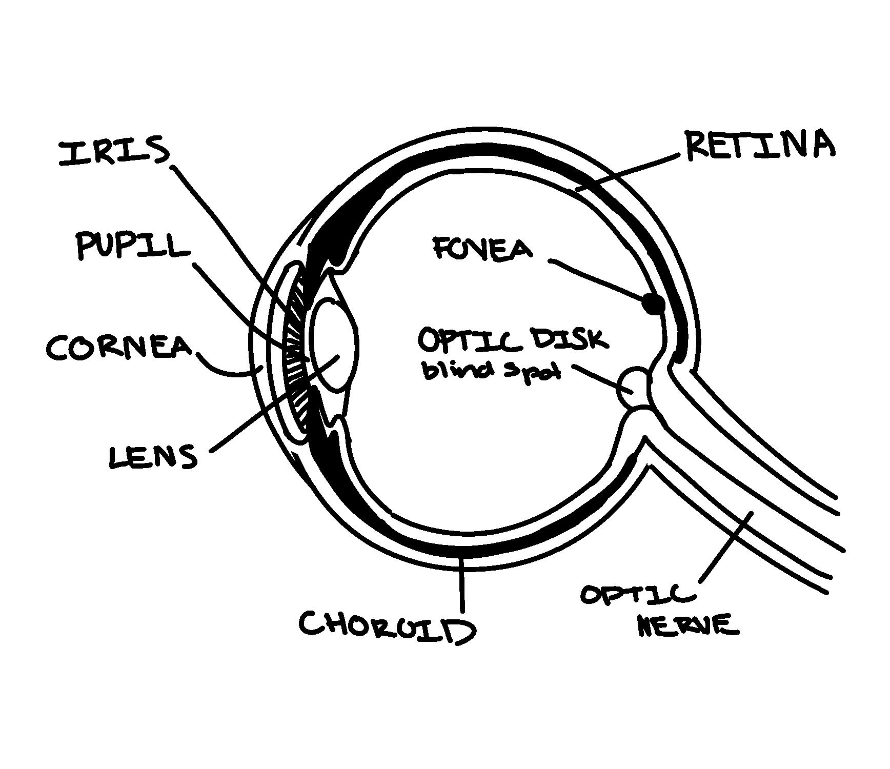
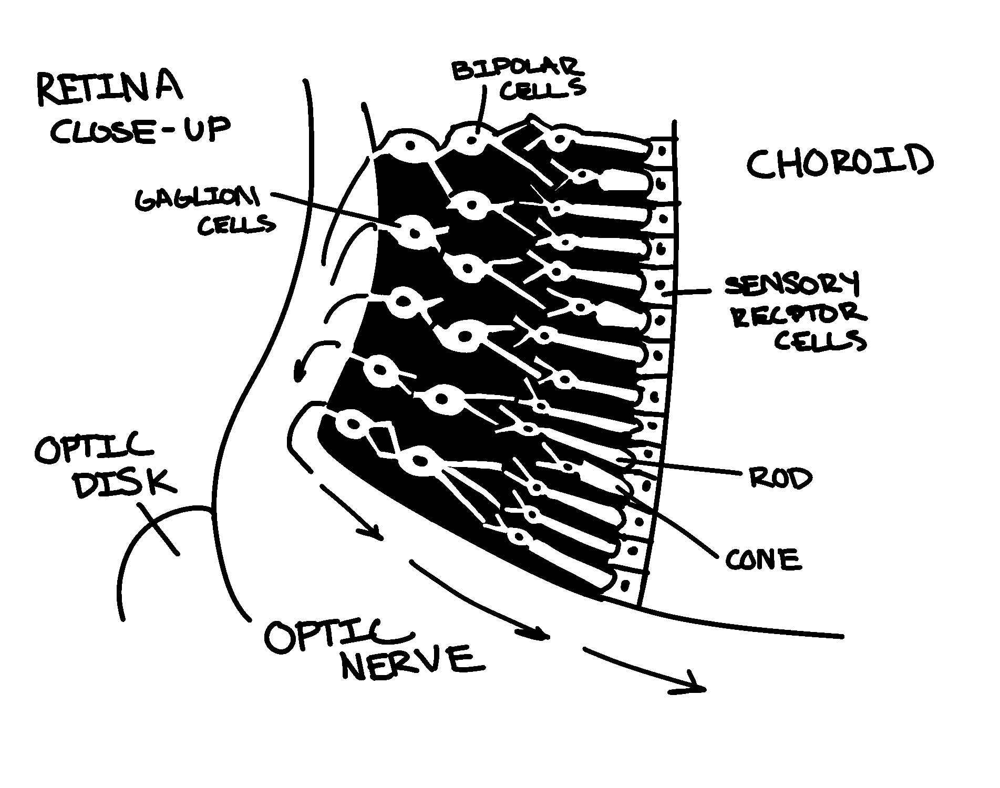
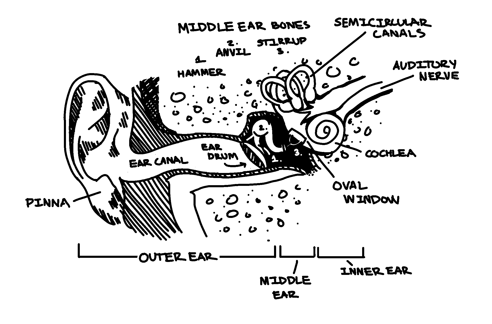
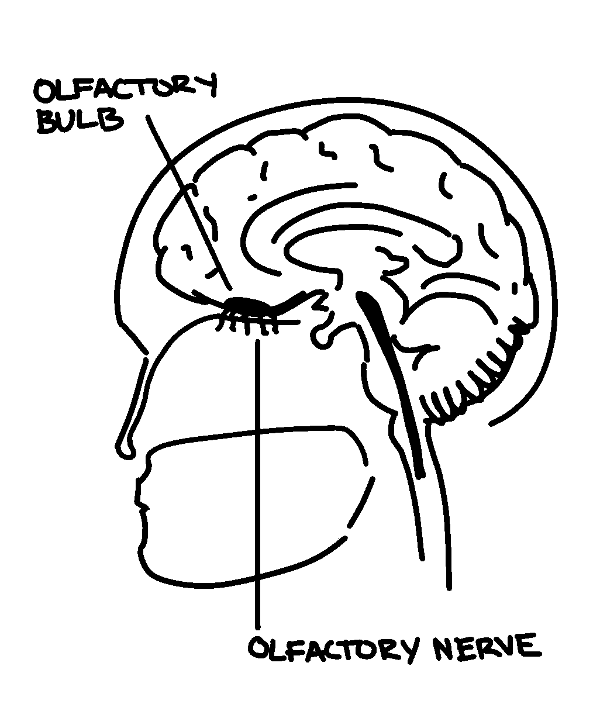
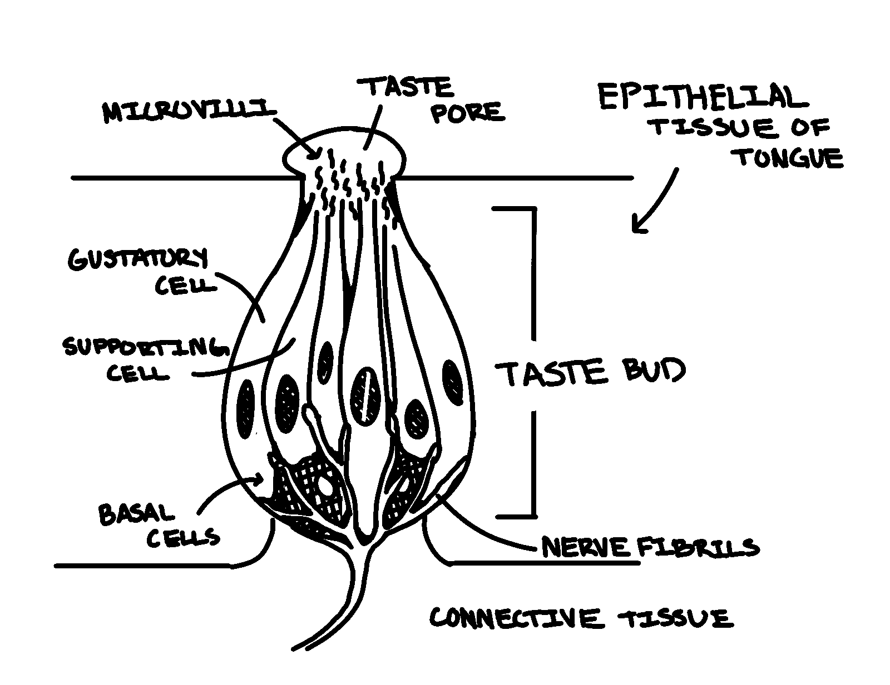

Slides
- Part 1: The Basics of Sensation and Perception
- Part 2: Sensation - Vision and Audition
- Part 3: Sensation - Chemical and Body Senses
- Part 4: Factors in Perception
Part 1: The Basics of Sensation and Perception
Processes of Sensation and Perception and how they Interact
Sensation
the process of detecting a physical stimulus, such as light, sound, heat, or pressure
- Sensory receptors: specialized cells unique to each sense organ that respond to a particular form of stimulation
ex: rods and cones in the retina, at the back of the eye, respond to light, registering patters of light, dark, and color. - Transduction: the process by which a form of physical energy is converted into a coded neural signal that can be processed by the nervous system
Perception
the process of integrating, organizing, and interpreting sensations
- we make sense of the "raw data"
while there is no exact line between sensation and percpetion,
- sensation emphasizes the sensory receptors
- perception is mostly a function of the brain
ex: the rods and cones detect patterns of light, dark, and color (sensation), while the brain interprets the data (perception)
The Concepts of Threshold and Adaptation
for sensation to occur, sensory receptors must be specialized to detect the specific form of stimulus energy
ex: the human eye cannot detect infrared light. it can only respond to energy in the visible spectrum
For sensation to occur, the stimulus must also be strong enough to register
Thresholds
one of the major challenges in studying the senses is to study thresholds. A threshold is the point at which a stimulus is strong enough to be detected because it activates a sensory receptor call.
- Absolute threshold: smallest strength of a stimulus that can be deteced half the time
- ex: the softest sound you can hear, the smallest concentration of suger that can be tasted in your cup of coffee
- Difference threshold: just noticeable difference; smallest difference that can be detected hald the time
- ex: how much lighter in weight can a company make a chocolate bar before you notice it
- Weber's Law: for each sense, the size of a just noticeable difference is a constant proportion of the size of the initial stimulus
- this is important because it shows that out experience of sensation is relative. It depends on factors beyond just the objective characteristics of the physical stimulus
Adaptations
duration of exposure also affects sensitivity to a physical stimulus
- Sensory adaptation: the decline in sensitivity to a constant stimulus
Review Questions:
- What does the process of sensation involve?
- detecting a physical stimulus, such as light, sound, heat, or pressure
- Which of the following best describes transduction?
- the process by which physical energy is converted into a neural signal
- What is the primary function of sensory receptors like rods and cones in the retina?
- To detect and respond to light, registering patterns of light, dark, and color
- How does perception differ from sensation?
- sensation emphasizes sensory receptors detecting physical stimuli, while perception involves the brain's organization and interpretation of these sensations
- Which process is responsible for turning light patterns into a neural signal that the brain can understand?
- Transduction
- What does the concept of "absolute threshold" refer to?
- the smallest amount of stimulus that can be detected half the time
- which term describes the smallest detectable difference between two stimuli
- difference threshold (just noticeable difference)
- According to Weber's law, how is the size of a just noticeable difference related to the initial stimuli?
- it is a constant proportion to the size of the initial stimulus
- What is the primary prupose of sensory adaptation?
- to decrease sensitivity to a constant stimulus over time
- if you are in a brightly lit room and then enter a dimly lit room, what process of adjusting to the lower light levels an example of?
- sensory adaptation
Part 2: Sensation - Vision and Audition
The Capabilities and Limitations of Vision
Visible light is a small part of the electromagnetic spectrum
- electromagnetic energy travels in waves
- different forms of electromagnetic energy differ in wavelength (the distance from one wavelength to another)
human vision is limited to the visible spectrum because our receptors can only respond to these wavelengths. other species don't have this limitation (ex: pit vipers see infrared light)

complex processes underscore the impressive capabilities of human vision
- light enters the eye
- light waves reflected from the object enter the eye, passing through the cornea, pupil, and lense
- Cornea: a clear membrane covering the front of the eye that helps gather and direct incoming light
- Pupil: the black opening in the middle of the eye
- Lens: a transparent structure located behind the pupil that actively focuses, or bends, light as it eneters the eye
- in a process called accommodation, the lens changes shape to focus incoming light so that it falls on the retina
- light reaches the retina
- Retina: a thin, light-sensitive membrane located at the back of the eye that contains the sensoru receptors for light: the rods and cones (the photoreceptors)
- Rods: are more sensitive to light that cones and are primarily responsible for peripheral vision and night vision
- rods are most prevalent in the periphery of the retina
- Cones: are responsible for color vision, for vision in bright light, and sharpest focus (visual acuity)
- Fovea: the small area in the center of the retina composed entirely of cones. it is the area of sharpest focus
- Blind spot: the point at which the fibers that make up the optic nerve leave the back of the eye and project to the brain
- because there are no photoreceptors in the blind spot, thre is a tiny gap in your field of vision. however, it is thought that the brainfills inthe missing part with surronding info
- signals from the rods and cones undego preliminary processing in the retina before they are transmitted to the brain
- info from the rods and cones is collected by specialized neaurons called bipolar cells
- they funnel the info to other specialized neurons called ganglion cells
- ganglion cells receive, analyze, and code photoreceptor info located in its particular area of the retina
- each ganglion cell then transmits the info to the brain
- signals from rods and cones are processed differently in the retina. the brain receives less specific visual info from the rodd, and a much greater visual detail from the cones
- cones are especially important in visual acuity
- info travels from the ganglion cells to the brain via the optic nerve
- optic nerve: a thick nerve made up of axons of the ganglion cells that exits from the back of the eye and extends to the visual cortex of the brain
- visual cortext: in the occipital lobe, where the signals are decoded and interpreted

The Capabilities and Limitations of Audition
Audition: the send of hearing
Sound waves: the physical stimuli that produce the sensory experience of sound
- loudness: determined by the intensity, or amplitude, of a sound wave and is measured in units called decibels
- pitch: the relative "highness" or "lowness" of a sound, is determined by the frequency of a sound wave, which is the rate of vibration, or the number of sound waves per second
- timbre: the distinctive quality of a sound, is determined by the complexity of the sound wave
human audition is limited to a range od frequencies that typically decrease as a person ages

complex processes underscore the impressive capabilities of human audition
- the outer ear collects the sound waves
- the pinna catches the sound waves and funnels them into the ear canal
- the eardrum, which separates the outer ear from the middle ear, is a tightly stretched membrane at the end of the ear canal that virbrates when hit by sound waves
- the middle ear amplifies the vibrations of the eardrum
- the middle ear consists of three small bones: the hammer (malleus), the anvil (incus), and the stirrup (stapes). Each bone's vibrations set the next bone in motion
- if the tiny bones are damaged or decome brtittle with age, conduction deafness may result. a hearing aid can be used to amplify the sound waves
- the stirrup transmits the amplified vibration to the oval window (a membrane separating the middle ear and the inner ear)
- the inner ear is responsible for transduction. the neural signals travel to the brain via the auditory nerve
- the inner ear consists of the cochlea and the semicircular canals
- cochlea: a fluid-filled tube, coiled into a spiral.
- the fluid ripples in response to virbrations from the oval window
- the rippling fluid transmits vibrations to the basilar membrane of the cochlea, which is embedded with hair cells, the sensory receptors for sound
- transduction: as the hair cells bend, they stimulate the cells of the auditory nerve generating a neural impulse, which carries the neural info to the thalamus and the auditory cortex in the brain
- hair cells have tiny, projecting fibers that can be damaged, causing nerve deafness. the damafe is often caused by extreme or repeated exposure to loud noises. sometimes nerve deafness can be treated with a cochlear implant. this device converts sound into electrical impulses that directly stimulate the auditory nerve
Review Questions:
- What part of the electromagnetic spectrum is visible to humans?
- visible light
- Which structure of the eye is responsible for bending light to focus it on the retina>
- lens
- what is the process called when the lens adjusts its shape to focus light on the retina>
- accomodation
- where are rods mainly in the retina?
- in the periphery of the retina
- what part of the retina is known for having the highest visual acuity and is composed entirely of cones?
- fovea
- what is the primary function of cones in the retina?
- color vision and sharpness of vision in bright light
- what visual limitation is associated with the blind spot?
- it has no photoreceptors and creates a gap in the visual field
- what type of cells in the retina collect info from rods and cones?
- bipolar cells
- what key functions do rods serve in vision?
- provide night vision and peripheral vision
- which of the following describes how loudness is determined?
- by the amplitude of the sound wave
- pitch is determined by which characteristic?
- frequency
- what does timbre refer to in the context of sound?
- the quality or complexity of a sound
- which part of the ear is responsible for collecting sound waves?
- pinna
- what role do the three small bones in the middle ear play in hearing?
- they amplify the vibrations of the eardrum
- what is the function of the cochlea in the inner ear?
- to convert vibrations into neural signals
- how does nerve deafness typically occur?
- by damage to hair cells in the cochlea
- what device can help individuals with nerve deafness by converting sound into electrical impulses
- cochlear implant
Part 3: Sensation - Chemical and Body Senses
The Capabilities and Limitations of the Chemical and Body Senses
Chemical Senses
senses with sensory receptors that are specialized to respond to chemical substances
Olfaction
- molecules in the air are inhaled.
- They encounter millions of olfactory receptor cells located high in the nasal cavity
- these cells only last for 30-60 days and are contantly being replaced
- so far, hundred of different receptors have been identified
- when olfactory receptor cells are stimulated by airborne chemicals, the stimulation is converted into a neural message that passes along the cells' axons
- these axons bundle together to make up olfactory nerves which connect directly to the olfactory bulb (enlarged ending of the olfactory cortex)
- unlike other senses, the info is not relayed via the thalamus
- axons from the olfactory bulb form the olfactory tract
- this tract projects to different brain areas, including the temporal lobes and structures in the limbic system, which are involved in emotional responses
- the brain identifies odors by interpreting the pattern of receptors that are stimulated
- it's estiamted that humans can detect 10,000 different odors
- human sensitivity to odor declines with age
- although humans are highly sensitive to odors, many animals display even greater sensitivity

Gustation
- chemical substanced dissolved by saliva enter taste buds (sensory receptor organs for taste)
- taste buds are distributed throughout the tongue
- each has maximum sensitivity to one of the five basic tastes and lesser sensitivity to others
- 5 basic tastes: sweet, sour, salty, bitter, umami
- special receptor cells in the taste buds send neural messages to the thala,us and then to several regions of the cortex
- animals vary in their ability to sense different tastes due to evolutionary factor
- in humans, children have greater sensitivity to taste, with an average of 10,000 taste budy. Adults have on average 5,000 taste buds and less sensitivity
- taste is only one aspect of flavor

Skin and Body Senses
Touch
skin is the largest and heaviest sense organ. It contains many kind of sensory receptors
- some specialized receptors respond to one stimulus (e.g., pressure, cold, warmth), and others respond to more than one
- sensory receptors are distributed unevenly among different body areas as needed for their various functions
Pain
unpleasant sensory and emotional experience associated with actual or potential tissue damage
Nociceptors (free nerve endings): small sensory fibers in skin, muscles, and internal organs
Pain systems:
- Fast pain system (myelinated fibers): sharpt, intense, short-lived pain
- Slow pain system (unmyelinated fibers): full, burning, throbbing, persistent pain
Proprioception and Vestibular Sense
- Proprioception: the sense of body movement and position
- Proprioceptors: sensory receptors, located in the muscles and joints, that provide info about body position and movement
- Vestibular sense: sense of balance, or equilibrium, by responding to chnages in gravity, motion, and body position
- sources of vestibular sensory info: semicircular canals and vestibular sacs: located in the ear
maintaining balance requires integration of the vestibular sensory info with data from Proprioceptors and the visual system
- conflicting info can result in dizziness and disorientation
Review Questions:
- what are the chemical senses primarily specialized to detect?
- chemcial substances
- what distinguishes olfaction from other sensory systems in terms of information processing
- it does not relay through the thalamus
- what are the five basic tastes recognized by taste buds
- sweet, sour, salty, bitter, umami
- where does taste information go after being processed by the taste buds
- to the thalamus and then to various cortical regions
- how does the number of taste buds change from childhood to adulthood
- it decreases from an average of 10,000 to about 5,000
- which of the following is the largest and heaving sense organ in the human body
- skin
- which type of sensory receptor is responsible for detecting pain?
- Nociceptors
- the fast pain system with which of the following types of pain
- answer
- proprioceptors are located in which parts of the body
- muscle and joints
- which sensory system is primarily responsible for maintaining balance and equilibrium
- vestibular sense
- conflicting information from the vestibular system, proprioceptors, and the visual system can lead to which of the following conditions
- dizziness and disorientation
Part 4: Factors in Perception
The Interaction of the Person and the Environment in Determining Perception
Perception refers to the process of integrating, organizing, and interpreting sensory information into meaningful representations
Incoming data from the environment (sensory information) is integrated and interpreted based on the expectations and experiences of the individual
Therefore, every perception results from the interaction of the person and environment
Two major processes contribute to perceptions:
- Bottom-up processing: emphasizes the importance of sensory receptors in detecting the basic features of a stimulus; moves from part to whole; also called data-driven processing
- Top-down processing: emphasozes importance of observer's cognitive processes in arriving at meaningful perceptions; moves from whole to part; also called conceptually driven processing
Perceiving the Environment: What is it?
Although to some degree we rely on size, color, and texture to detmine what an object might be, we rely primarily on an object's shape to identify it
- identifying an object's shape involves isolating the figure from the background. This is an automatic process
- Gestalt psychology: an eawrly school of psychology that studied perception
- founded by German psychologist Max Wertheimer in the early 1900s
- emphasized that we perceive whole objects or figures (gestalts) rather than isolated bits and pieces of sensory info
- the early Gestalt psychologists noted that figure and ground have vastly different perceptual qualities
- the separation of a scene into a figure and ground is a psychological accomplishment and not a property of the actual elements of the scene at which you are looking
- demonstrated in a Figure-Ground Reversal
Perceiving the Environment: How far away is it?
Depth Perception: the use of visual cues to perceive the distance of an object and its three-dimensional characteristics
- Monocular cues: distance or depth cues that can be processed by either eye alone
- Relative size: if two or more objects are assumed to be similar in size, the object that appears larger is perceived as being closer
- Overlap: when one object partially blocks or obscured the view of another object, the partially blocked object is perceived as being farther away
- Aerial perspective: faraway objects appear hazy or blurred by the atmosphere
- Texture gradient: as a surface with a distinct texture extemds into the distance, the details of the surface texture become less clearly defined
- Linear perspective: parallel lines seem to meet in the distance. The closer together the lines appear to be, the greater the perception of distance
- Motion parallax: when you are moving, youuse the speed of passing objects to estimate the distance of the onjects. Nearby objects seem to zip by faster than do distant obects
- Binocular cues: distance or depth that require the use of both eyes
- Conveergence: degree to which muscles rotate your eyes to focus on an object
- the more eyes converge, or rotate inward, the closer the object is perceived to be
- farther objects require eyes to converge less
- Binocular disparity: perception of depth from different images on each retina
- our eyes are set a few inches apart; a slightly different image of an object is cast on the retina of each eye
- when the images are very different, we perceive the object as near
- when the two retinal images are nearly identical, the object is perceived as father away
Perceiving the Environment: Where is it going?
Perceiving motion:
- the image of the object moves across the retina
- eye muscles make microfine movements to maintain focus on the moving object compared to the background
- when the retinal image of an object enlarges, we perceive the object as moving toward us
- perception of speed of the object's approach is based on our estimte of the object's rate of enlargement
- neural pathways combine info about eye-muscle activity, the changing retinalimage, and the contrast of the moving object with its stationary background
Perceiving a Stable Environment despite Ever-CHanging Sensory Input
- Perceptual constancy: tendency to perceive objexts, especially familiar objects, as constant and unchanging despite changes in sensory input
- Size constancy: perception of an object as maintaining the same size despite changing images on retina
- Shape constancy: perception of a familiar objext s maintaining the same shape, regardless of image produced on the retina
Misperceiving the Environment
Perceptual Illusion: misperception of the true characteristics of an object or image
- Müller-Lyer illusion: involves the misperception of the identical length of two lines, one with the arrow pointed inward, one with the arrow pointed outward
- since the early 1900s, it has been known that people in industrialized societies are far more susceptible to the Müller-Lyer illusion than are people in some nonindustrialized socities
- carpentered-world hypothesis: proposes that people in industrialized environments have a great deal of perceptual experience in judging lines, corners, edges, and other rectangular, objects
- for these people, the Müller-Lyer figures may evoke depth cues. When these cues are combines with size constancy expectations, they distort the perception of the size of the lines
- research results (e.g., Segall and colleagues, 1963, 1966) supporting this hypothesis have provided evidence that culture can shape perception
Review Questions:
- what does perception primarily refer to?
- the process of integrating, organizing, and interpreting sensory information
- which of the following best describes bottom-up processing in perception?
- detecting the basic features of a stimulus and building up to a complete perception
- top-down processing relies heavily on which of the following?
- cognitive processes, such as expectations and prior experiences
- what is another name for bottom-up processing?
- data-driven processing
- which of the following is the primary factor humans rely on to identify objects
- shape
- what is the main focus of Gestalt psychology in perception?
- the percption of whole objects or figures
- Who founded Gestalt psychology?
- Max Wertheimer
- The concept of 'figure-ground' separation refers to:
- the way in which an object is seen as distinct from its background
- which of the following is a monoculer cue for depth perception?
- relative size
- which depth cue requires the use of both eyes
- Binocular disparity
- what does monocular cue 'linear perspective' refer to?
- parallel lines appearing to meet in the distance
- in binocular depth perception, when do we perceive an object as being farther away?
- when the images on each retina are nearly identical
- how do eue muscles contribute to perceiving motion
- they make microfine movements to maintain focus on a moving object
- what does the perception of an object moving toward us depend on?
- the rate of enlargement of the object's retinal image
- what is 'perceptual constancy'
- the tendency to perceive objects as un-changing despite changes in sensory input
- which of the following best describes the Müller-Lyer illusion?
- the misperception of the length of two lines with different arrow orientations